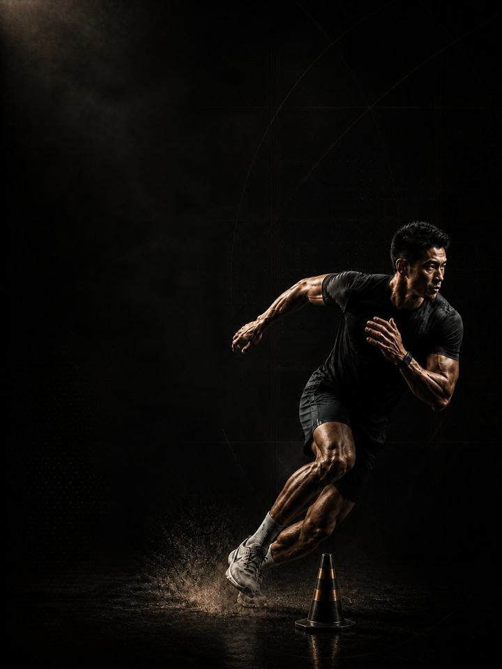

الحركة متعددة الاتجاهات · المنافسة
احتفظ بالقوة التي بنيتها بينما يحاول الموسم أن يستعيدها منك.
- مناسب لـلاعبي كرة القدم وكرة السلة وكرة اليد خلال الموسم
- أيام التدريبيومان في النادي أسبوعيًا حول مبارياتك، ويوم واحد في الأسابيع المزدحمة
- مدة الجلسة48–60 دقيقة
- المعداتنادٍ متكامل، مع كرة طبية وزلّاجة وأقماع إن توفّرت
- الصيغةملف PDF للهاتف، وكل تمرين مرتبط بفيديو توضيحي
لمن هذا البرنامج
للاعبي كرة القدم وكرة السلة وكرة اليد خلال موسم المنافسات. هذه هي الكتلة التي لا يكاد أحد يطبّقها كما يجب. يبدأ الموسم، فيتوقّف النادي، وبحلول الشهر الثالث تكون القوة التي بُنيت في الكتلتين 1 و2 قد تسرّبت بصمت. وهذا تحديدًا وقت وصول الإصابات، والوقت الذي تتوقّف فيه الساقان عن الحضور في الدقائق العشرين الأخيرة.
تُفقد القوة أسرع بكثير مما تُبنى، وأسرع ما تُفقد وأنت تلعب. والحل ليس تدريبًا أكثر، بل أقل وأثقل: جلستان قصيرتان في الأسبوع، بحجم منخفض وجودة عالية، تُرتَّبان حول المباريات بدلًا من أن تصارعاها. الرياضة توفّر الحجم، والنادي يوفّر ما تستهلكه الرياضة.
موقعها من السنة: الكتلة 3 من 4 في عائلة الحركة متعددة الاتجاهات: الأساس، ثم البناء، ثم المنافسة، ثم الاستشفاء، بهذا الترتيب. طبّقها طوال موسم المنافسات، مهما كان طوله. وإذا امتد الموسم أكثر من اثني عشر أسبوعًا، فكرّر الأسابيع 9–12 حتى ينتهي.
أسبوعك
يومان في النادي هما النسخة الأساسية. وفي الأسبوع المزدحم، اليوم 1 وحده، فهو يحمل الرفعة الثقيلة وتمارين الأنسجة، وهما الأمران اللذان يجب ألا ينقطعا.
| الأحد | الاثنين | الثلاثاء | الأربعاء | الخميس | الجمعة | السبت | |
|---|---|---|---|---|---|---|---|
| داخل الموسم، يومان | اليوم 1 | رياضتك | اليوم 2 | راحة | رياضتك | مباراة | راحة |
| أسبوع مزدحم، يوم واحد | راحة | رياضتك | مباراة | راحة | اليوم 1 | رياضتك | مباراة |
لا تتمرّن أبدًا خلال 24 ساعة من مباراة، ويُفضَّل أن تترك 48 ساعة خالية قبلها وبعدها. انقل أيام النادي لتناسب جدول مبارياتك.
كل جلسة تسير بالطريقة نفسها:
- الإحماء، 8–10 دقائق. التسلسل نفسه في كل جلسة. تفعيل الأرداف والوركين والكتفين قبل أي حركة سريعة.
- السرعة والقدرة الانفجارية، 12–15 دقيقة. قفزات قصيرة ورمي الكرة الطبية، مع عمل قصير للعَدْو وتغيير الاتجاه في الأسابيع 5–8. تعافٍ كامل بين المجموعات.
- القوة، 20–25 دقيقة. الرفعات المركّبة الثقيلة، مع دقيقتين إلى ثلاث دقائق بين المجموعات.
- تمارين الأنسجة، 8–10 دقائق. النوردي وكوبنهاغن والسمانة والحمل. في النهاية، ولا تُحذف أبدًا.
الجلسات قصيرة عن قصد، 48–60 دقيقة. إذا تركتك الجلسة متألمًا في المباراة التالية، فقد كانت أطول من اللازم، لا أخف من اللازم.
كيف تتقدّم الأسابيع الـ12
للتدريب داخل الموسم مهمة واحدة: الحفاظ على الصفات التي قضيت أربعة وعشرين أسبوعًا في بنائها، بينما تأخذ الرياضة الأولوية. تبقى الأوزان ثقيلة والحجم منخفضًا طوال الأسابيع الاثني عشر، وهذا المزيج يحافظ على القوة بأقل كلفة على ساقيك. وما يتغيّر هو مقدار تمارين السرعة إلى جانب المباريات.
| الأسابيع 1–4 | الأسابيع 5–8 | الأسابيع 9–12 | |
|---|---|---|---|
| المرحلة | الحفاظ على القوة | الحفاظ على القدرة الانفجارية | حماية الأنسجة |
| الهدف | الحفاظ على القوة القصوى خلال أسابيع المنافسة | الحفاظ على القدرة الانفجارية وسرعة العَدْو | الحفاظ على تحمّل النسيج الضام حتى الأسابيع الأخيرة |
| كيف تبدو | ثلاث مجموعات ثقيلة لكل رفعة، وتمارين قدرة انفجارية قصيرة، وتمارين الأنسجة كاملة | عمل القوة نفسه، مع عودة تمارين سرعة قصيرة وحادّة | ينخفض الحجم مرة أخرى، وتبقى تمارين الأنسجة، ولا يُضاف شيء جديد |
| المجموعات الفعلية أسبوعيًا | 36 | 38 | 36 |
| متوسط الجهد | جهد 7.1/10، يتبقى نحو 3 تكرارات | جهد 7.1/10، يتبقى نحو 3 | جهد 6.7/10، يتبقى نحو 3.3 |
| مرات الهبوط أسبوعيًا | 29 | 40 | 29 |
| الرميات أسبوعيًا | 15 | 40 | 15 |
المرحلة في لمحة
المجموعات التدريبية أسبوعيًا حسب ما تدرّبه. الخط المتقطع هو مستوى الجهد.
موقع هذه المرحلة في السنة التدريبية
نفّذ المراحل الأربع بالترتيب لتكتمل سنة تدريبية كاملة.
الجهد (RPE) تقييم من 1 إلى 10 لمدى صعوبة المجموعة: «جهد 7/10» يعني أنه يتبقى في الخزان نحو 3 تكرارات. والمجموعات الفعلية لا تشمل الإحماء.
أسابيع التخفيف: في الأسبوعين 6 و12 تُقسم المجموعات على اثنين، والأسبوع 12 أسبوع تخفيف كامل. وفي سلسلة مباريات مزدحمة، خذ أسبوع التخفيف مبكرًا. التقويم هو من يقرّر، لا الصفحة.
القواعد التي تجعله ينجح
- ثقيل، لكن بقدر قليل جدًا. ثلاث مجموعات ثقيلة لكل رفعة عند جهد 7–8/10. الوزن الثقيل هو ما يحافظ على القوة، والحجم هو ما يسبّب الألم العضلي، والألم العضلي هو ما يكلّفك المباريات.
- ليس خلال 24 ساعة من مباراة أبدًا. ويُفضَّل 48 ساعة خالية قبلها وبعدها. الجلسة التي تضرّ بمباراة قد فشلت، مهما كان شعورك فيها جيدًا.
- تمارين الأنسجة لا تنقطع أبدًا. النوردي وكوبنهاغن وتمارين السمانة تستمر كل أسبوع، بما في ذلك الأسابيع المزدحمة. فهي سبب وجود هذه الكتلة.
- لا تلاحق الأرقام الشخصية. إذا كانت رفعاتك ترتفع بقوة خلال الموسم، فالنادي يأخذ طاقة تحتاجها الرياضة. الحفاظ على المستوى هو النجاح هنا.
- دع التقويم يحرّك أسبوع التخفيف. الأسبوعان 6 و12 هما الافتراض، لكن تراكم المباريات يتقدّم عليهما.
- رقم القفزة أرخص اختبار للتعب. ثلاث قفزات عمودية بحركة تمهيدية واليدان على الوركين، في بداية كل يوم 1، واحتفظ بأفضلها. إذا كانت أقل بأكثر من 10% من متوسطك المتحرّك، فخفّف ذلك اليوم: احذف تمارين القدرة الانفجارية ومجموعة واحدة من كل رفعة.
- احسب مرات الهبوط، لا المجموعات فقط. كل قفزة وحجلة ووثبة ونزول يُحسب، بما في ذلك قفزات الإحماء. أما الرميات والعَدْو والعبور الجانبي فوق الصندوق وخطوات التحفّز فلا تُحسب. أبقِ الأسبوع تحت نحو 100 هبوط داخل الموسم، والمباريات والتدريب الرياضي تُحسب فوق ذلك.
المصطلحات
- الكتلة التدريبية: 12 أسبوعًا. هذا البرنامج. تطوّر الكتلة الواحدة مجموعة واحدة من الصفات إلى مستوى محدّد.
- المرحلة (الدورة المتوسطة): 4 أسابيع. تستهدف كل منها صفة واحدة. وأربعة أسابيع اختيار لا قاعدة، فالمدة تتبع الهدف.
- الأسبوع التدريبي (الدورة الصغرى): حيث يرتفع الجهد، وتُضاف المجموعات، ويقع أسبوع التخفيف.
- السنة التدريبية (الدورة الكبرى): أربع كتل بالترتيب (الأساس، والبناء، والمنافسة، والاستشفاء)، نحو 48 أسبوعًا.
كيف تقيس تقدّمك
رقم القفزة الأسبوعي هو المقياس الأساسي داخل الموسم، مع إعادة الاختبار في أسبوعي التخفيف، 6 و12.
شكل التقدّم الجيد
- الأسابيع 1–4: يتوقّف النادي عن الشعور بأنه عبء إضافي، وتصمد الساقان في أواخر المباريات.
- الأسابيع 5–8: يبقى رقم القفزة ثابتًا بدلًا من أن ينخفض. وفي منتصف الموسم، هذا فوز لا ركود.
- الأسابيع 9–12: تنهي الموسم بالقوة التي بدأته بها.
تكتمل الكتلة عندما: ينتهي الموسم وقوتك حيث كانت في بدايته، ولم يتّسع فرق القفز بين الساقين أبدًا. الحفاظ على المستوى هو الهدف كله. وإذا كانت الأرقام ترتفع، فأنت على الأرجح تتدرّب بقوة أكبر مما يحتمله الموسم، وسيظهر ذلك في المباريات.
احترم أسبوعك
احسب كل شيء: المباريات، والتدريب الرياضي، والنادي، والنوم. القفزات المفاجئة في حمل التدريب الأسبوعي هي أكثر ما يتنبّأ بالإصابة موثوقيةً في رياضة الهواة. في أسبوع رياضي ثقيل، احذف جلسة في النادي أو قلّص تمارين القدرة الانفجارية، لكن لا تضحِّ أبدًا بالرياضة والتعافي معًا. واحمِ 7–9 ساعات من النوم، فهو أقوى أداة متاحة لتحسين الأداء، وأرخصها.
الأدلة العلمية
كل برنامج في المكتبة مبني على أبحاث منشورة، وقوة تلك الأبحاث مذكورة صراحةً لا ضمنًا. وحيث تكون الأدلة محدودة، تقول الصفحة ذلك.
| النتيجة | المصدر | ما لا تُظهره |
|---|---|---|
| تدريب القوة يخفض الإصابات الرياضية إلى أقل من ثلث معدلها في المجموعة الضابطة. أما الإطالة فلا تخفضها. | Lauersen, Bertelsen & Andersen, British Journal of Sports Medicine 2014. Meta-analysis of 25 RCTs, 26,610 participants. PMID 24100287 | نسبة الخطر 0.32 لتدريب القوة و0.96 للإطالة. تفاوتت التجارب كثيرًا، ولم تكن الجرعة موحّدة. |
| البرامج التي تتضمّن تمرين نورديك للعضلات الخلفية للفخذ تخفض إصابات العضلات الخلفية للفخذ إلى النصف تقريبًا. | van Dyk, Behan & Whiteley, British Journal of Sports Medicine 2019. Meta-analysis, 15 studies, 8,459 athletes. PMID 30808663 | نسبة الخطر 0.49، أو 0.55 بعد استبعاد الدراسات عالية خطر التحيّز. وهي تقيس البرامج التي تتضمّن التمرين، لا التمرين وحده. |
| تمرين واحد للعضلات الضامّة، ثلاث مرات أسبوعيًا قبل الموسم ومرة أسبوعيًا خلاله، خفض مشكلات الفخذ الداخلي المبلَّغ عنها بنسبة 41%. | Harøy et al., British Journal of Sports Medicine 2019. Cluster-randomised trial, 35 teams, 652 male footballers. PMID 29891614 | نسبة الأرجحية 0.59. البيانات مبلَّغ عنها ذاتيًا، وفي كرة القدم شبه الاحترافية للرجال فقط. ولم تُكرَّر بعد على النساء أو في رياضات أخرى. |
| أي وصفة تدريب معقولة أفضل من عدم التدريب. الأحمال الأثقل تحتل المرتبة الأعلى للقوة، والمجموعات المتعددة تحتل المرتبة الأعلى لحجم العضلات. | Currier, McLeod, Banfield et al., British Journal of Sports Medicine 2023. Network meta-analysis, 178 strength and 119 hypertrophy studies. PMID 37414459 | كانت الفروق بين الوصفات صغيرة، وكلها نجحت. |
ماذا بعد
بعد 12 أسبوعًا:
- الكتلة التالية: الحركة متعددة الاتجاهات · الاستشفاء
- منطقة واحدة تحتاج إلى عمل: السلسلة التصحيحية
قبل الشراء: احصل على موافقة طبية أولًا إذا
- كان لديك ألم في الصدر، أو ضيق تنفس غير معتاد، أو خفقان، أو دوخة أثناء المجهود.
- كان لديك ضغط دم مرتفع غير منضبط، أو مرض قلبي معروف، أو خضعت لعملية جراحية مؤخرًا.
- كنتِ حاملًا أو بعد الولادة بفترة قصيرة. احصلي على موافقة وبرنامج مخصص أولًا.
- كان لديك ألم حاد في مفصل واحد لا يهدأ. ابدأ ببرنامج أكسس التصحيحي المناسب.
هذا البرنامج إرشاد عام للياقة البدنية، ولا يغني عن التقييم الطبي.